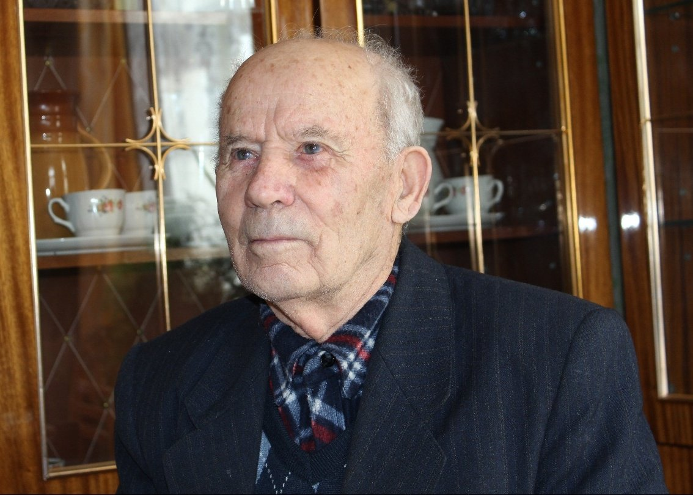
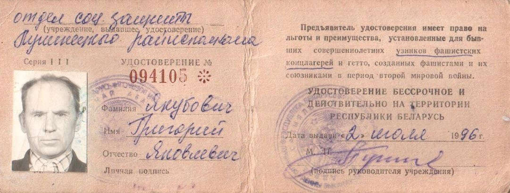

Якубович Григорий Яковлевич
🏡 1. Семья и довоенное детство
Родился в крестьянской семье Якова Петровича и Арины Игнатьевны в Кожан-Городке. В семье росли пятеро сыновей: Тимох, Вася, Гриша, Миша и Вова.
⚡ 2. Начало войны и оккупация родного края
В 1942 г. староста деревни составил списки на принудительный вывоз молодежи в Германию. Парней из Кожан-Городка погрузили в эшелон и доставили в Шнайдемюль.
⛓️ 3. Облава, арест и отправка в эшелонах
Работал у бауэра Дегнера на пахоте и уходе за лошадьми. Четверо полешуков затосковали по дому и наивно решили бежать через лес на станцию. Беглецов поймали в лесу и отправили в печально известный концлагерь Заксенхаузен под Берлином.
🌾 4. Рабский труд, испытания и лагеря Германии
Заксенхаузен: 70 бараков, крематорий с гигантскими печами, непрерывный смрад сжигаемых тел. 10 часов каторги под дулами карателей: цементирование полов, монтаж тяжелых станков. Еда — баланда из ракушек и 150 грамм опилочного хлеба в день. При наступлении советских войск узников погнали маршем смерти, бросив обессилевших в поле.
🕊️ 5. Освобождение союзными и советскими войсками
Освобождены советскими воинами. Служил полтора года в 185-м запасном армейском полку в Жабинке.
🌱 6. Возвращение на пепелище и мирный труд
Вернулся на Полесье, работал кочегаром, машинистом и слесарем на лесозаводе в Микашевичах. В 1947 г. женился на швее Галине Герасимовне, вырастили четверых детей (Николай, Владимир, Людмила, Нелли).
📷 Фотографии и архивные документы (2)
Фото 27. Якубович Григорий Яковлевич, 2013 год

Фото 28. Удостоверение узника концлагеря №094105